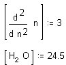

Variable and Function Names |
Variable and function
names can be of any length and can contain a variety of characters. There are,
however, some restrictions. Variable and function names can consist of:
- All upper and lowercase Roman letters. Names are case sensitive.
- The digits 0 through 9, but not as the first character of a name. Mathcad
interprets leading digits in combination with letters as either an imaginary
number (2i or 3j), a binary, octal, or hexadecimal number (for example,
5o, 7Fh), or as a number times a variable (3x).
- The prime symbol ' [Ctrl] [F7], the percent symbol %
and underscore _.
- Greek letters, which can be typed by
using the Roman character followed by [Ctrl] G.
- Literal Subscripts and Namespace subscripts (as opposed
to array subscripts).
- The infinity symbol, [Ctrl] [Shift] Z. By itself, this symbol is a
built-in constant.
- All characters in a name must be in the same font, have the same point size,
and be in the same style (italic, bold, and so on). Greek letters can appear in
any function name. Mathcad is able to distinguish between the same name in
different math styles.
- Variable names and function names are not distinguishable. Thus, if you
define f(x), and later you define the variable
f, you will find that you cannot use f(x)
anywhere below the definition for f.
- Certain names are already used for built-in constants, units,
and functions. Although you can
redefine these names, keep in mind that their built-in meanings will no longer
exist after the redefinition. For example, if you define a variable called
mean, the built-in function mean(v)
can no longer be used. If you have
warnings turned on, redefinitions are flagged.
- Names cannot contain a period, which always refers to the literal
subscript operator, and cannot begin with a minus sign (-), which always refers
to the negation operator.
If you want a variable name to contain an operator
symbol and its associated placeholders, such as the factorial or integral
symbol, you must use a special mode, most often used for chemistry notation.
-
Press [Ctrl] [Shift] J to insert a pair of brackets with a placeholder
between them.
- Type whatever letters, numbers, and operators are in the
name.
For example,

Some characters, such as $, are used to create operators
and so can't be typed directly into a variable or function name. Other symbols
require a sequence of character strokes, such as [Alt]0176 for the degree symbol
°. Use "text in math" mode to type the actual symbol, instead
of the operator, inside a variable or function name such as K$
or x@3:00.
-
Type a letter or number to begin the name.
-
Type [Ctrl] [Shift] K to enter a special "text" mode. The
editing lines turn red to indicate you are in the special text mode.
-
Type one or more symbols.
-
Type [Ctrl] [Shift] K again to return to regular math editing mode.
Another way to get special symbols is to copy them from another Mathcad document, where the above steps have already been done. There is a QuickSheet
that contains many useful symbols. To copy these symbols,
- Open QuickSheets from the Help menu.
- Click on "Math Symbols."
- Select the math symbol you want, move the cursor over the edge of the region
until it becomes a hand, and drag the region to
your worksheet.
You can also paste a symbol from another application. If you know the ASCII
code, you can hold down the [Alt] key while typing the ASCII code using the numeric
keypad. You can find codes for special symbols by choosing Character Map
from System Tools in Accessories under the Program files in your Start menu.
Notes:
- Mathcad distinguishes between uppercase and lowercase letters. For example,
diam is a different variable from DIAM. Mathcad also distinguishes
between names in different fonts. Thus Diam is also a different variable
from Diam.
- Special characters particularly useful in Mathcad are available in the Custom
Characters Toolbar and on the Greek Characters
Toolbar.